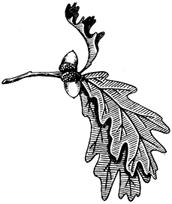
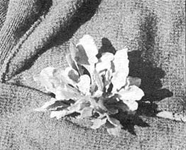
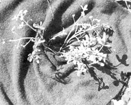
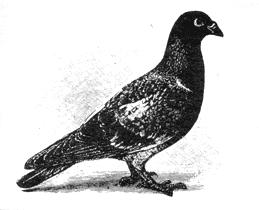
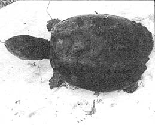
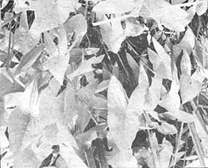
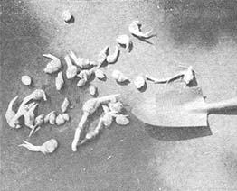

Late fall can be a busy time for the wild food forager. This is the season for walnuts and many fruits and is the time that I plant dandelions and chicory in boxes to be brought inside for the winter garden. Then I'll find and use whatever green plants are still around while I lay in the winter's supply of meat.
One good "greens" that probably is still harvestable is purslane, (Porlulaca Oleracea), a vine-like, always-tender plant with small elliptical leaves. Purslane was originally grown in India for a vegetable and was introduced to this country by the early settlers. It's quite fond of growing in cultivated soil and is found in almost every garden here in Wisconsin. I frequently find all the purslane I want in a field corn row where it quite happily adapts to the rich soil.
Harvest the plant by pulling it up and cutting off the roots and dead leaves. Wash the purslane then, and use scissors to trim the small branches and leaves away from the large central stalk. Discard the stalk or save it for pickles.
Purslane is one of my favorite "frying greens." After I've trimmed and washed the plants as outlined above I drop approximately a double tablespoon of bacon grease in a frying pan and turn the heat to medium. When the grease is melted and sizzling slightly I stir in the greens. I then reduce the heat to low and continue stirring until the purslane is well wilted and some of the smaller leaves are turning brown. I remove the pan then and set it aside under a cover so the purslane will keep warm until I'm ready to eat.
Fried purslane like this will make a complete meal. The dish is even more nourishing and hearty tasting with some hickory nuts, walnuts, hazelnuts or toasted soybeans sprinkled into the greens as you fry them. You may even want to toast the nuts for a few minutes in the bacon grease first before you add the purslane. I can make a lunch of this nut-and-fried-greens combination and it will sustain me very well until the evening meal, even when I'm working hard.
Purslane has the ability to thicken soups in somewhat the same way as okra and I would like to outline a hearty "early winter soup" that will warm body and soul during this brisk season of the year.
Pick, wash and chop into inch pieces a good double handful of purslane. Use stems and all. Set aside. Dice and pan brown about two pounds of beef soup meat. Deer meat is pretty good also, if you have it. Place the browned meat and bone in a four quart pan, cover with water and simmer for 1-1/2 hours to make soup stock. Chop one medium onion and two medium potatoes. Add the onion and potatoes to the soup stock and simmer for one half hour. Add the chopped purslane, boil for about twenty minutes, season and serve.
Purslane makes good boiling greens too. Pick, wash and chop into large pieces a quantity of the plant. Place in pan, cover with water and boil for ten minutes. Drain and serve with butter.
You're throwing away a lot of vitamins when you discard this water, of course, and a slightly better way is to tie the purslane in a bunch and steam it in an inch of water in a covered pan.
Actually, the only way to eat purslane and be sure of getting all the vitamins and minerals is to eat it raw. A good raw salad is made by picking a cupful of the leaves only and placing these greens in a bowl with an equal amount of lettuce or other salad plants. Pour on a couple teaspoons of bacon drippings, toss and serve. I frequently eat purslane right from hand out in the field, too. It has just enough sour taste to make it go down well when you're hungry.
If you have a blender, purslane can be made into some good soups or green drinks. Pick, wash and trim the large stems from a good double handful of the plant and place in your blender with a medium-size cored apple. Add a half cup hazelnuts or toasted soybeans, drop in some sweetener-honey, if you have it-pour in a cup of water, add a double teaspoon raw whole grain wheat and liquify.
Purslane vegetable soup is made by adding a double handful of washed, trimmed purslane to three slices of raw onion, two medium tomatoes and a tablespoon wheat. Liquefy in the blender, add water to the desired consistency and heat until just short of boiling. Eat with toasted whole grain wheat bread.
Another plant that makes soup here in Wisconsin in November is wild mustard and I have a lot of affection for this hardy plant. In fine disdain for the cold blasts that we sometimes get here in November, mustard stays green and palatable when many fancier plants have been sheared into brown corpses by the frosts. In fact, Brassica Nigra doesn't know enough to quit even when the snow falls and the ground freezes hard. On the southwest corner of one of my fish ponds where the sun always shines and the snow melts away, the plant remains green all winter. Every now and then through the cold season I pick a few of these leaves, crunch their frosty coolness between my teeth and know I must be getting some of the prodigious amounts of ascorbic acid that the plant contains.
Winter, of course, is only a minor time for using mustard. In early spring the tender young plants are the very best boiling greens. They require a little longer time for cooking than some others but don't overcook them.
"Boiling greens" of course give up many of their vitamins and water soluble minerals into the water when they're cooked and we keep the liquid from the greens and either drink it or use it for soup. If the water from boiled greens tends to be bitter it can be sweetened with onion.
A pretty good soup is made by adding 1/4 cup coarse ground, cooked whole wheat and a small, diced, fried onion to four cups greens water. Simmer 30 minutes, float a large pat of butter on the soup and serve.
The young mustard plant can be steamed and eaten in the spring also, especially if you don't mind a slight bitter taste. Wash and clean a quantity of the plants and steam them in the top of a double boiler for at least thirty minutes. Save this juice too.
But back to early winter when, in our area, the call goes out from several farmers that I know to "please come get this year's crop of barn pigeons." The birds tend to stay inside farm buildings more in the winter and the manure they create drops directly on machinery and the hay that is stored for cows and other animals. In short, pigeons are terrific nuisances and farmers are glad to get rid of them. This is fine with me. I'm glad to get the birds.
I collect pigeons after dark with a good bright flashlight and my son, who's a speedy climber. After checking with the farmer (so we don't get shot for trespassing), we go into the farm buildings and shine our light along rafters until we spot roosting pigeons. The fellow who isn't climbing then keeps the light shining directly in the birds' eyes while the other man quietly climbs up the barn's structure, grabs the pigeons by hand and places them (alive) in a burlap bag. A good night's haul will yield from 30 to 100 birds which, properly processed, are as good as the finest chicken.
We keep the pigeons in a cage until we're ready to do something delectable with them . . . like a dish of wild mustard and pigeon breast that will delight the taste buds of any food forager.
For this recipe, first kill four birds by chopping off their heads and allowing them to bleed. When they're well bled, cut off the birds' wings and legs and skin the pigeons by pinching up their breasts and tearing the skin between your fingers. Insert both forefingers in the tear and-pulling toward the head with one and toward the tail with the other finger-peel skin, feathers and all off the bird. If the skin doesn't pull away clean, peel off the patches that stick. Then remove each bird's entrails and wash the body cavity clean. Set the dressed birds aside to cool.
When the pigeons have properly cooled, cook them in a pressure cooker at ten pounds pressure for 10 to 20 minutes. Cool the cooker under a stream of water, remove the pressure ball and, when the steam is gone, remove the lid. If the pigeon is properly cooked the meat can be flaked off the bones with a fork.
Set the bones, organs and neck aside for soup stock and place the strips of meat in a paper bag containing a half cup flour that has been slightly salted. Shake the bag to coat the meat well, melt a quarter pound of butter in a pan and fry the strips of pigeon at very low heat until golden brown.
Now have a good quantity of mustard greens cleaned and ready. Push the strips of pigeon to one side of the pan and fry the greens slowly, mixing with the pigeon until the meat is distributed throughout the greens. Eat while hot.
Many meats are best when eaten warm and venison is a prime example.
The harvest of deer here in Wisconsin is terrific. During the annual gun season alone a total of approximately 100,000 deer are taken every year. At about 50 to 75 pounds of table meat to the animal this adds up to a terrific total of steaks, chops and roasts. Also, since there are four different hunting seasons in the state an individual can legally harvest four deer a year. Multiply this by the number of licenses in a family and it becomes apparent that venison can supply a mighty lot of meals to homesteaders and others.
There is, of course, a wide gap between buying a license and harvesting the deer. After considerable experience and reading on the subject I've come to the conclusion there are only two good ways of hunting deer in our heavily forested regions. One is by driving areas with a large group (ten or more) of hunters. The second (and more solitary) method is to watch a well traveled runway from as high an elevation as is practical.
Driving an area involves surrounding it as much as possible with hunters stationed at likely deer escape routes while the major portion of the hunters (drivers) move through the patch of woods. The standers wait as motionless as they can get until time to shoot and the drivers can shout, whistle or bark like dogs to flush the deer and advise the standers of their whereabouts . . . or they can move silently. I doubt that it makes much difference to the effectiveness of the drive. Since deer are very hard to herd, the line of drivers should be as closely spaced as possible and still form a complete line across the patch of forest being driven.
You can work the second method alone. Just find a deer runway with lots of fresh tracks, climb a large enough tree to rest comfortably in and watch for the deer to come by. Of course, some judgement is called for. A runway leading to an apple orchard where the deer feed at night would not be a good place to watch during the day in gun season, for instance. At that time of year the deer are not as much interested in food as they are in moving from one patch of cover to another to escape hunters and a better runway would be one that connects two swamps or leads through a brushy draw between two hills.
The tree you wait in should allow you to rest comfortably at least ten feet above the ground. This elevation accomplishes two purposes: [1] it keeps you out of a deer's normal range of vision (they almost never look up) and [2] probably more important, it keeps your scent from drifting to the animal's sensitive nostrils.
Since warm air rises, the heat from your body containing your scent will rise above the deer and it will not be warned. Never, never smoke while "on stand" either . . . it creates both a movement and a very heady odor.
If you wish to gain more knowledge of deer hunting or hunting in general, a book I recommend is Hunting Secrets Of The Expert Doubleday, 1964.
We allow our deer to cool out at least three days before dressing. The steaks are then sliced thin, rolled in flour and fried slowly in bacon grease. Venison roast is very good also.
A good wild meal that can be completely harvested in November starts with turtle stew eaten with whole grain crackers. The soup course is followed by venison roast with a side dressing of arrowhead potatoes and a salad made from cattail shoots, dandelion crowns and sour sorrel. Whole grain wheat bread, toasted and swabbed with jam made from black currants or rose hips goes well with this main course and beechnut pie and coffee makes a satisfying dessert.
For our turtle stew we first have to find the turtle and that's not too hard if we know where to look.
In the fall, snapping turtles burrow into the mud beneath a lake, pond or spring to sleep out the winter. To find them, make up a metal probing rod about six feet long with a point on the end.
Bore a hole in the rod about two inches from the blunt end and attach a leather thong to tie to your wrist so you won't lose the probe in the muddy bottom of the lake.
When you have your rod, get into a boat or put on a pair of waders and wade around in water about three feet deep at the edge of lakes or ponds. At intervals push the rod into the mud. If it contacts something solid try to determine what it is (a turtle shell and a buried can sound almost the same).
Once you suspect you've touched a buried turtle, leave the rod in the ground against him, get into the water and dig down in the mud with your hands. You don't have to be afraid the snapper will bite you as he's sound asleep. Reach down, get both hands on his shell and pull him out. If you don't like to touch the turtle, though, you can hook him out with a special rod.
Make this tool by soldering the largest fish hook you can find to a second rod. (It doesn't work too well to use the probe for this). Reach down with the hooking rod, try to get it under the turtle and give short quick jerks until he's hooked underneath the rim of his shell.
The snapping turtle also likes to burrow into swamps and into springs in the sides of hills. Often there will be three or four in such a location and you can find them with a rod there too.
At any rate, when you have your turtle take him home and dress him by cutting off his head. Allow all body movements to stop, cut completely around the under edge of the shell and peel the turtle out (see MOTHER NO. 3 for more information on this). Skin out all meat, dice, roll in flour and brown on top of the stove.
To two pounds of diced, browned turtle meat add one medium-size diced onion, two cups of cattail shoots, one cup of soybeans that have soaked overnight, three cups of arrowhead tubers, one half cup of chopped watercress and one small cup of tomatoes. Place in a large pan, bring to a high boil, reduce to a simmer and cook for two hours. Season well and serve with a pat of butter and whole grain crackers.
The crackers served with the turtle stew are made by mixing 1-1/4 cup fine ground whole grain wheat flour with one teaspoon baking powder, 1/4 teaspoon salt, 1/2 cup butter and four tablespoons water (or enough to make dry dough). Cut the butter into the flour. mix very well and then add the water.
Roll out into a 1/8-inch thickness and bake at 375° on a cookie sheet until brown on the bottom. Turn the crackers over and brown their other side.
The main course is made by selecting a large piece of rump roast of venison. Trim away most of the fat and membrane, cut sleep into the roast in several places and push bacon into the cuts. Dig and scrub four cups of arrowhead tubers and put them in the pan with the roast (they should almost cover it). Place about an inch of water in the bottom of the pan and roast at 350° until the arrowhead roots are well cooked. This will indicate the meat is done also. Baste frequently while roasting and save the liquid to pour over the tubers before eating.
While the meat is cooking, dig amounts of cattail shoots and dandelion crowns and find a patch of sour sorrel. Chop about a cupful of each and toss with bacon grease in a salad bowl.
We make bread by grinding (in our Corona gain mill) 11 cups of whole grain wheat flour. We sift the flour and then pour it all back together. If you'd like to follow our recipe, dissolve one package of dry yeast in one cup of warm water and let it set while you're grinding the wheat.
Combine three cups of white with the whole grain wheat flour, add 1/4 teaspoon salt, pour in the yeast and mix very well. Now add two tablespoons molasses and enough milk to make a slightly moist dough. Turn out on a floured board and knead until quite stiff, then grease a large bowl and turn the dough in it until coated with grease. Let dough stand in the bowl until doubled in bulk. Divide into two loaves, let raise again and bake in a greased bread pan at 375° about one hour or until done.
The beechnut (Fagus Grandifolia) is a large hardwood tree found over much of the United States. Its nuts-which drop when ripe-are small, double in the husk and just what you want for the dessert for this meal. If you can't get beechnuts, however, the following pie recipe will be good with most any nuts you find.
Combine one cup dark brown sugar and 1/2 cup molasses. Add one tablespoon flour, two tablespoons melted butter, 1/8 teaspoon salt and three eggs. Beat very well. Line a nine inch pie tin with dough and place a half cup of beechnuts on the bottom of the pie. Pour the mixture over the nuts and bake in a hot oven (450°) for ten minutes, reduce the heat to 350° and bake for 30 minutes. Serve hot or cold for the perfect ending to a perfect foraged November meal.
|
 immature mustard |
 purslane |
 pigeon |
|
 snapping turtle |
 arrowhead |
 arrowhead tubers |
|
 |
|
|